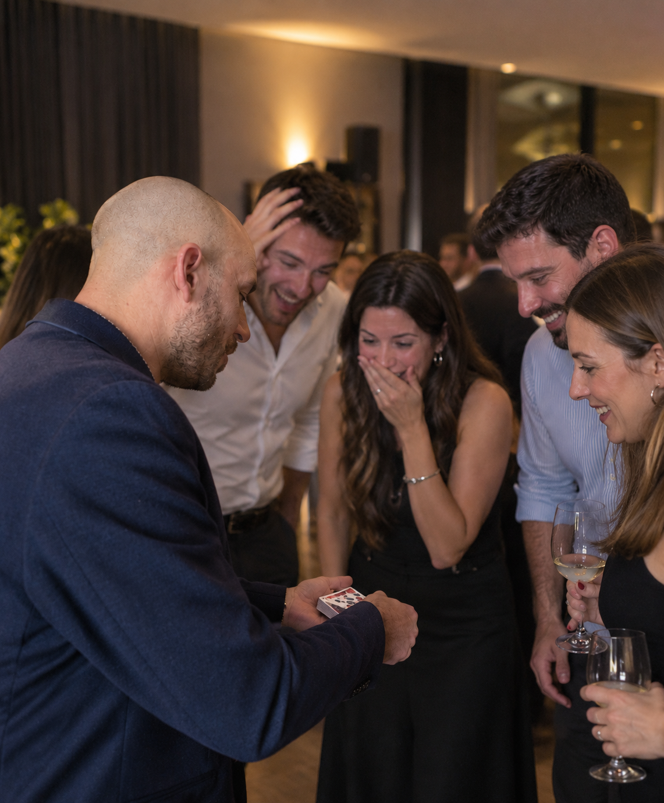
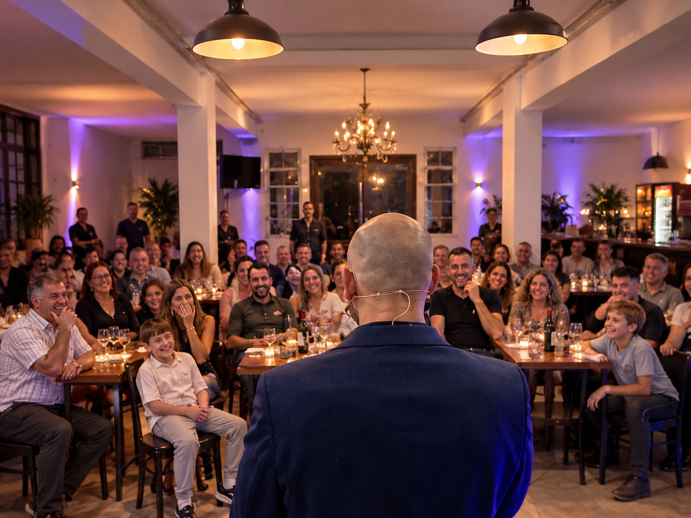

Una experiencia que combina magia de cerca entre los invitados y un show de ilusionismo y mentalismo para compartir con todos.
Descubrir la propuesta ↓Una propuesta que combina magia de cerca durante la recepción con un show central de ilusionismo y mentalismo. Primero, la magia sucede a centímetros de los invitados, en pequeños grupos y de manera personal. Más tarde, todos se reúnen para disfrutar de un espectáculo compartido.

La magia aparece entre los invitados.
Durante la recepción o el cóctel, Mati se acerca a los distintos grupos para compartir experiencias de magia e ilusionismo a centímetros de los espectadores. Cada encuentro es diferente, cercano y participativo. Una manera de sorprender a los invitados mientras disfrutan del evento.
Un espectáculo para compartir con todos.
Luego llega el momento de reunir a los invitados para disfrutar de un show de ilusionismo y mentalismo. Una presentación dinámica y participativa, con predicciones, efectos visuales, humor y momentos de asombro en los que el público también es protagonista.

Los dos momentos se integran de manera natural, adaptándose al cronograma y a la dinámica de cada evento.
Casamientos, cumpleaños, celebraciones, fiestas privadas y recepciones.
Encuentros corporativos, cenas, presentaciones, reuniones y celebraciones de empresa.
Contame qué estás organizando y te envío una propuesta adaptada a tu evento.
Consultar disponibilidad